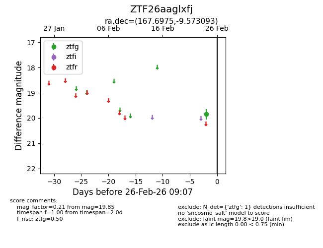
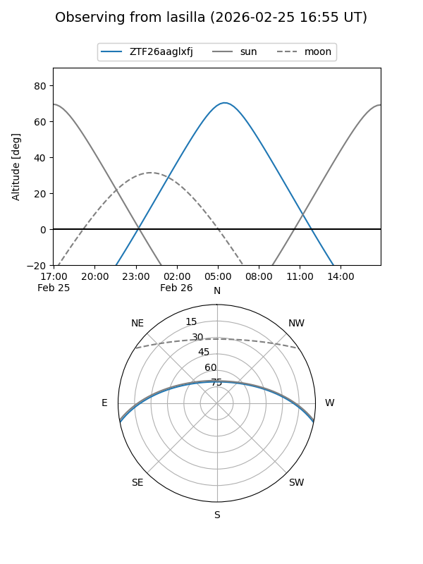
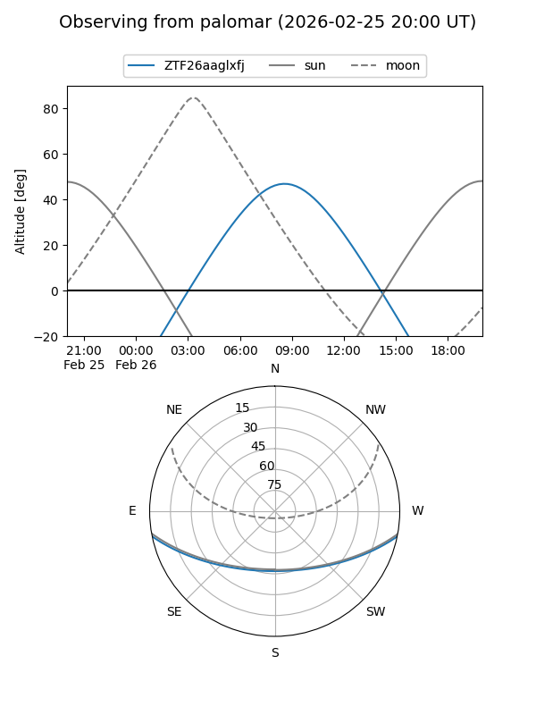

ZTF26aaglxfj
Target ZTF26aaglxfj at 2026-02-26 09:08
Aliases and brokers:
FINK: link
Lasair: link
ALeRCE: link
alt names
ZTF26aaglxfj (ztf,fink_ztf)
Coordinates:
equatorial (ra, dec) = 167.6975,-9.57309
equatorial (HMS+DMS) = 11:10:47.40,-09:34:23.13
galactic (l, b) = (265.8627,+45.92965)
Flags:
Photometry:
last ztfg=19.85
1 ztfg detections
Lightcurve

Visibility


Additional plots